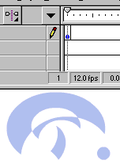
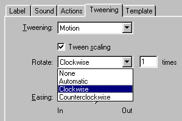

Creating "Zoom-like" sites


Downloadable FLA
The zooming symbols (wierd background shapes) on my site has been a mystery to many. It is explained here:
Step 1. Create a symbol or a graphic you want to zoom.
Step 2. Place this symbol in a keyframe.

Step 3. Make an ending keyframe, by pressing F6 some keyframes away from this.
Step 4. Let's say we want to zoom in on this wierd symbol, like my site does. Press CTRL + ALT + S, and enter the amount of percent you want to scale the symbol. In this case 400%.
Step 5. Now rightclick the frames between the starting and the ending keyframe, and select properties. Select Tweening, and select Motion Tweening.
Step 6. Now you have the wierd symbol, zooming. Now we want it to rotate... Still in the Motion tween menu, select rotate, and choose either clockwise or counterclockwise. Enter 1 in the amount.

Now the symbol rotates.
There you have it. 3D in Flash.
Tip: Examine also "making smooth animation".